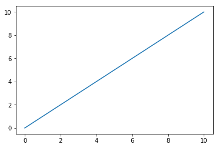
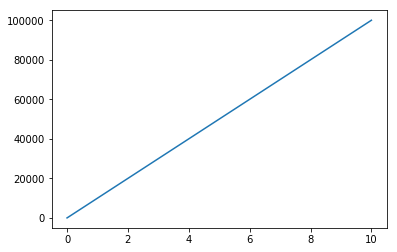
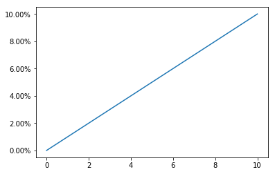
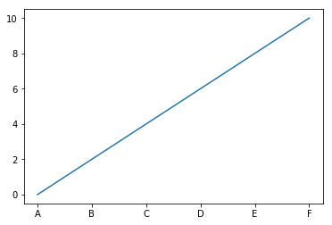
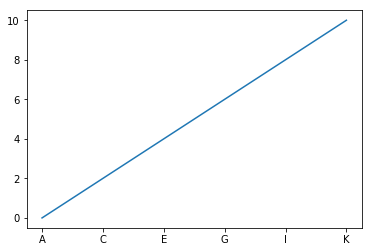
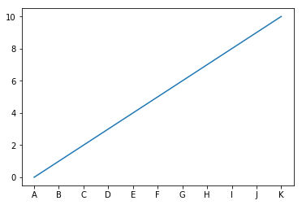

Manipulating Tick Labels
Often, the data that we wind up plotting isn’t the in a very readable format– whether it’s a matter of rounding numbers to a managable significance level or substituting “January … December” for the numbers 1-12.
Starting with a simple figure.
%pylab inline
x = y = np.linspace(0, 10)
fig, ax = plt.subplots()
ax.plot(x, y)Populating the interactive namespace from numpy and matplotlib
[<matplotlib.lines.Line2D at 0x598e0f0>]

Reformatting Floats
Often our axis won’t have numbers in a very clean/readable format.
Huge Numbers
Something like this will make a reader squint and count 0’s
bigY = y * 10000fig, ax = plt.subplots()
ax.plot(x, bigY)[<matplotlib.lines.Line2D at 0x5974e48>]

We can save them the headache with StrMethodFormatter.
Note: per the documentation, the formatting in the curly braces must begin with x.
fig, ax = plt.subplots()
ax.plot(x, bigY)
fmtr = matplotlib.ticker.StrMethodFormatter(('{x:,g}'))
ax.yaxis.set_major_formatter(fmtr)Or if you find yourself reporting on millionaires, cleaning up the y axis with a custom function does you a lot of favors.
Note: Still unclear why, but your custom function should be prepared to take a second argument, regardless of whether or not you use it.
biggerY = y * 10e8def millions(x, pos):
return '${:,.1f}M'.format(x*1e-6)
fmtr = matplotlib.ticker.FuncFormatter(millions)
fig, ax = plt.subplots()
ax.plot(x, biggerY)
_ = ax.yaxis.set_major_formatter(fmtr)
Percents
We can figure out the correct syntax to format a float into a percent via some string formatting finagling via StrMethodFormatter
fig, ax = plt.subplots()
ax.plot(x, y)
fmtr = matplotlib.ticker.StrMethodFormatter('{x:2.2f}%')
_ = ax.yaxis.set_major_formatter(fmtr)
Alternatively, we can use PercentFormatter to make short work of the same task, and neater, too.
fig, ax = plt.subplots()
ax.plot(x, y)
fmtr = matplotlib.ticker.PercentFormatter(decimals=2)
_ = ax.yaxis.set_major_formatter(fmtr)
Changing Tick Outright
Now imagine that we’re trying to make our X axis (1-10) correspond to which letter of the alphabet it enumerates.
Simply setting the tick labels doesn’t suffice, because each tick represents multiples of 2.
fig, ax = plt.subplots()
ax.plot(x, y)
_ = ax.xaxis.set_ticklabels(['', 'A', 'B', 'C', 'D', 'E', 'F'])
Similarly, if we line up the labels to their appropriate location, we’re throwing out every other letter because we’re only showing every other tick.
fig, ax = plt.subplots()
ax.plot(x, y)
fmtr = matplotlib.ticker.IndexFormatter(list('ABCDEFGHIJK'))
ax.xaxis.set_major_formatter(fmtr)
Thus, the solution (borrowing from the other notebook on Tick Locations) involves the same step as before, while also turning on the odd ticks in between.
fig, ax = plt.subplots()
ax.plot(x, y)
fmtr = matplotlib.ticker.IndexFormatter(list('ABCDEFGHIJK'))
ax.xaxis.set_major_formatter(fmtr)
loc = matplotlib.ticker.MultipleLocator(1)
ax.xaxis.set_major_locator(loc)